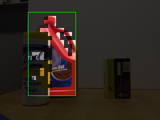
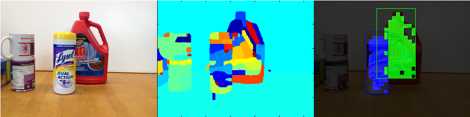
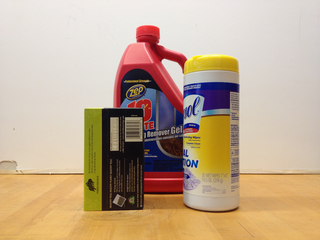
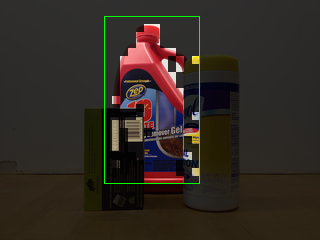
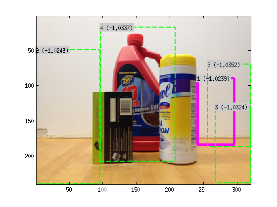
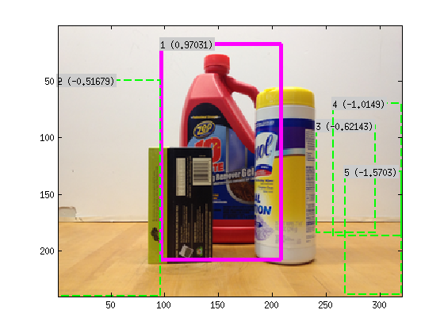

While collecting resuts for the project on estimating pose from a single RGB image, we observed that our object detection and pose estimation algorithm was quite sensitive to the object being occluded from the front. Pose estimation because it depended directly on the edges and object detection because it used the dense HOG description of the object outlines. Of course, part-based object detectors are somewhat robust to occlusion but it still lowers the detector score. Such detections are easily discarded when a strict threshold is imposed to get high precision. In fact, this is true for almost all the object detection and pose estimation algorithms out there.
So for my Masters' Thesis I researched strategies to detect objects in spite of (partial) frontal occlusion. This research was heavily influenced by the paper on segmentation aware object detection by Tianshi Gao et. al. and Machine Learning community literature on Structural SVMs. I was able to detect objects occluded up to 60%, and also segment the inside of the bounding box into object vs. non-object categories. Using this approach to detect objects, I was able to show better or equal performance (on P-R curves) than the stock DPM object detector on my household object datasets.

Details and algorithm descriptions can be found in my thesis. Broadly speaking, this is how it works:
The figure below shows a sample image, its oversegmentation and the result produced by the algorithm.

One could also use the DPM implementation to speed up the whole process. By training a normal DPM model for the object and running inference on the image first, 4 or 5 candidate regions can be collected. Depending on the degree of occlusion, the highest scoring DPM candidate might not be the correct detection. But by running the segmentation aware object detection algorithm on these candidates, and by re-scoring the DPM candidates with the scores from the segmentation-aware object detection object described above, one can often get the correct detection. This is the reason for the better P-R curve performance. The figure below shows one such case. The correct detection is ranked 4th by DPM but 1st by the segmenation-aware algorithm.

